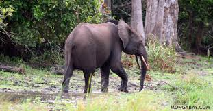

elefantes de bosque
 Los elefantes de bosque (Loxodonta africana cyclotis) viven en la República Democrática del Congo (RDC), entre otros países de África central y occidental. Son una subespecie de elefantes africanos que habitan en selvas densas.
Amenazas
Caza furtiva La caza furtiva por su marfil es una de las principales amenazas para los elefantes de bosque. Deforestación La tala y la agricultura para la expansión de la agricultura amenazan su hábitat. Conflictos armados Las guerras y los conflictos armados han afectado a los elefantes de bosque. Enfermedades Los elefantes pueden estar expuestos a enfermedades derivadas del contacto humano.